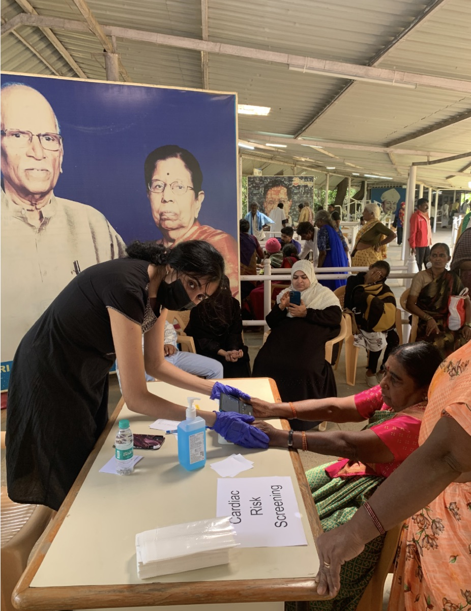

Cardiology
Jul 21, 2026 15 min ReadFrom a Busy OPD to Care at Home: The Tricog Connected Pathway

A crowded OPD has one queue that everyone can see and another that the clinical team has to work out. The visible queue runs by registration number and arrival time, while the clinical queue must run by risk, even when that risk is not obvious from how a patient looks or from the complaint written in the file.
Let us imagine three people sitting a few chairs apart – First one has come for a routine follow-up and mentions occasional discomfort only when the nurse probes. The second one reports chest heaviness but is still speaking normally and does not appear acutely ill. The third has known hypertension and diabetes and has recently become more breathless while doing ordinary household work. They have entered through the same door, but they do not necessarily have to wait in the same order or undergo the same tests.
The clinical team has limited time and incomplete information. It needs to decide who can continue through the normal OPD process, who needs a fuller cardiac evaluation, and who may require immediate attention. In a large tertiary hospital, this decision determines how quickly emergency and cardiology resources reach the right people. In a smaller clinic, it determines whether a patient can be managed locally or should be referred to a tertiary hospital or a cardiologist for further investigation.
The Tricog Connected Pathway begins at this point, before a final diagnosis even starts. It gives each patient a route based on the results at the current stage, rather than placing everyone on the same testing track of Consultation Probing Symptom-based evaluation and revisit. The pathway brings together several products and clinical services in one ecosystem it is best understood through the decisions that clinicians already make: identify risk, obtain a diagnostic ECG, assess for hidden heart failure risk, confirm the finding when necessary, and continue monitoring after treatment (though most may be disconnected). Each stage uses the level of technology and specialist support appropriate to that decision. Patients who do not need the next step can return to routine care, while those who do can move forward without avoidable delay.
 Tricog Connected Pathways: from early risk identification to
post-discharge care
Tricog Connected Pathways: from early risk identification to
post-discharge care
Deciding who needs attention first
People do not arrive with a label saying “cardiac patient”. Their symptoms may have several causes, and a detailed cardiac work-up for everyone in a busy OPD would be neither practical nor affordable. At the same time, relying solely on how ill someone looks can overlook patients whose risk is real but not immediately apparent.
Tricog CardioCheck, or TCC, is designed for this first decision. Using a single-lead ECG helps the care team place patients into clear screening categories such as normal, abnormal or critical. The output is kept simple by design because the purpose at this stage is not to make a final diagnosis. It is to help the team decide whether a patient should continue through the cardiac pathway and how quickly that should happen.
In a busy tertiary hospital, TCC can support at the front-line triage tables, often operating in the corner of the OPD, where patients wait in the consultation queue. A patient with a critical result can be brought to clinical attention quickly, while an abnormal result can prompt a 12-lead ECG and medical review. A normal result, when considered alongside symptoms, vital signs and clinical judgement, may allow the patient to leave the accelerated cardiac pathway and continue with the usual OPD assessment.
In a smaller clinic, the same screening result serves a different but equally useful purpose. The clinic may not have a cardiologist, an echocardiography service, or a cath lab, but it can still identify patients who should not be lost to follow-up. An abnormal or critical result provides the clinician with a clearer basis for referral to a facility that can perform a more comprehensive evaluation. The referral is created because a risk signal has been identified, rather than because the clinic has exhausted all other possibilities.
The value of TCC comes from the minimal infrastructure it asks for. A quick, low-cost screening step can be placed close to the patient, whether at an OPD triage desk, a primary care clinic, a community health programme, or another point of first contact. It helps them make a better first decision. The three patients in the waiting area may now take three different routes. The first receives a normal screening result and, if the rest of the clinical assessment is reassuring, returns to the usual OPD process. The patient with chest heaviness produces a critical signal and is brought forward for urgent medical review. The patient with hypertension, diabetes and increasing breathlessness is classified as abnormal. That patient is stable, but the result gives the team reason to investigate further rather than offering only a vague instruction to return if symptoms worsen.
Moving from a risk signal to a clinical ECG report
The next investigation for the critical and abnormal pathways is a standard 12-lead ECG. At a tertiary hospital, it can usually be done on-site. In a clinic without 12-lead capability, the TCC result can support referral to a diagnostic centre or larger hospital. Clinics that already have a compatible ECG machine can also connect it to the Tricog ecosystem to obtain a diagnosis in under 6 minutes.

With InstaECG, the ECG is acquired and sent securely to the Tricog cloud. Tricog’s algorithms perform the initial analysis, after which the ECG is reviewed through its round-the-clock medical reporting system. The completed report is sent back digitally to the healthcare team within minutes, allowing it to be read in the context of the patient’s symptoms, examination and history.
There is a straightforward reason why speed matters in ECG reporting: a 12-lead ECG is useful only when its findings reach a healthcare provider who can act on them. In many facilities, the machine is available, but an experienced reader or a doctor is not always present when the test is done. A report that waits in a queue until the next specialist visit may be technically complete (post his/her review), but clinically late. InstaECG connects acquisition, interpretation and reporting so that the ECG becomes part of the current consultation rather than paperwork for a later one.
The report also creates a very important branch in the pathway: if the ECG is normal and there is no ongoing clinical concern, the patient can return to the appropriate routine assessment. A normal ECG does not cancel symptoms or replace a doctor’s judgment, but it prevents the cardiac pathway from becoming a conveyor belt that sends everyone for advanced testing. If the ECG shows a critical finding, the treating team can activate the relevant emergency or treatment pathway, which may include an urgent cardiology review, transfer to a tertiary hub, a cath lab evaluation, or another intervention based on the diagnosis. In networked programmes, Tricog’s Cardionet platform can support
Communication and coordination among the referring centre, cardiologist, ambulance team, and receiving hospital, so that the critical alert is linked to an actual transfer of care (such as Tricog’s STEMI Goa Program). If the ECG is abnormal but not immediately critical, a further question arises: could this patient also be at risk of impaired cardiac function?
The 12-lead reports now further separate the two patients. The critical screen is confirmed as a finding requiring urgent action, allowing the treating team to move the patient into the appropriate acute-care route. The ECG from the patient with breathlessness does not show an event requiring immediate cath lab transfer, but it is not normal. The clinician has diagnostic information to guide the next decision, and the same ECG can also be examined for a risk that may otherwise remain hidden.
Finding heart failure risk in the ECG that has already been taken
Heart failure can be difficult to identify early, particularly when symptoms are mild, non-specific or attributed to age, weight, diabetes or hypertension. Echocardiography is central to assessing the structure and pumping function of the heart, but it is not realistic to perform an echo on every patient who reports fatigue or breathlessness. Access is also uneven, especially outside larger hospitals, and so are costs and infrastructure.
The Tricog LVEF algorithm adds a heart failure risk assessment to the 12-lead ECG already acquired through the pathway. When the InstaECG report identifies an abnormal ECG, the same digital ECG can be sent automatically for algorithmic assessment. There is no second ECG, no additional set of electrodes and no new acquisition step for the patient. The algorithm identifies patterns associated with reduced left ventricular ejection fraction and patients who may need confirmatory evaluation.
The algorithm does not diagnose heart failure, and it does not replace echocardiography. It acts as a screening layer between a widely available test and a more specialised (and rather expensive) one. A low-risk result can help the care team use echo capacity more effectively, subject to the patient’s clinical picture. A high-risk result provides a reason to arrange an echo even when the ECG report alone does not fully explain the patient’s symptoms.
This approach has been tested in the kind of setting for which it is intended. In a prospective study published in JAMA Cardiology in 2026, 1,444 adults across eight healthcare facilities in Kenya underwent both ECG-based AI screening and echocardiography. For detecting left ventricular systolic dysfunction, defined in the study as LVEF below 40%, the AI-ECG algorithm achieved 95.6% sensitivity and a 99.1% negative predictive value. The study, therefore, offers real-world evidence for the pathway itself: a widely available ECG can be used to screen at scale, after which an echo can be directed to patients at higher risk, with limited additional burden on the existing workflow.
The LVEF risk assessment in the abnormal pathway is positive. This does not tell the patient that heart failure has been diagnosed. It indicates to the clinical team that there is sufficient concern to proceed with the test that directly examines the heart’s structure and function.
Confirming the problem through echocardiography
An echocardiogram depends on two capabilities that are not always available together. The images must be acquired properly and interpreted by someone with the required expertise. A hospital may have an echo machine and a trained technician, but limited capacity for specialist reporting. A smaller centre may be able to arrange the study but still rely on a visiting cardiologist, thereby extending the time between testing and treatment. InstaEcho connects these parts of the process. Echo views and measurements acquired at the care centre are digitised and uploaded for review. Tricog’s AI-assisted tools support measurements, annotations and the first layer of interpretation, while a cardiac expert reviews the study and authorises the final structured report. The report is then returned to the treating facility in the required format, typically within a few hours under the current service model.
Of course, it does not remove the need for trained image acquisition or clinical judgement. It makes specialist reporting available without requiring the reporting doctor and the patient to be in the same place. For a facility with limited on-site coverage, that can turn an echo machine from an intermittently useful asset into a service that supports day-to-day care. For a tertiary hospital, it can reduce reporting bottlenecks and help standardise the flow of studies through a busy department.
For the patient, the practical gain is time. The sequence from an abnormal screening result to a 12-lead ECG, LVEF risk assessment and confirmatory echo can happen as a connected process rather than as four unrelated appointments. The clinical team receives sufficient information to confirm or rule out reduced cardiac function and to decide on appropriate treatment. Patients whose echo does not confirm the suspected problem can leave this branch of the pathway and continue with care suited to their actual condition. Patients with confirmed heart failure or another structural abnormality can be directed to the right cardiology service, procedure or medical management plan.
In this pathway, the echo confirms reduced left ventricular function. The patient’s symptoms, clinical examination, ECG and echo findings can now be considered together by the cardiologist. What began as a non-specific complaint has become a defined clinical problem with a treatment plan. Interesting point to note here – the pathway has not replaced any of the clinicians involved. It has helped each of them receive the information needed for the next decision while the patient is still within reach of care.
Treatment is a major milestone, but it is not the end of the pathway.
Once a diagnosis is made, patients may enter very different treatment routes. Someone with an acute coronary syndrome may require urgent transfer and cath lab care, and may further need angioplasty or coronary artery bypass. A patient with heart failure may begin or have adjustments to guideline-directed medical therapy, along with management of blood pressure, diabetes, fluid status and other risk factors. The pathway must allow the cardiologist to choose among these options rather than pushing every abnormal result into the same protocol.
Hospitals are generally well organised around the visible episodes of care: admission, procedure, observation, and discharge. The more difficult period often begins after the patient goes home. Instructions that were clear in the ward can become harder to follow in daily life (I am sure we have all experienced that at some point). Weight may begin to rise, blood pressure may move outside the desired range, symptoms may return, medicines may be missed (very common), or a rhythm problem may appear between scheduled visits, and the next appointment could still be weeks away!
If the connected pathway ends at discharge, it ends precisely when the hospital’s view of the patient becomes weakest – And this is where the risk of relapse and readmission starts to grow.

Extending cardiac care into the patient’s home with KeeboHealth
KeeboHealth carries the pathway into the post-discharge period. Depending on the patient’s condition and the programme selected by the treating doctor/medical team, connected devices and patient-reported inputs can integrate information such as blood pressure, pulse, weight, ECG, oxygen saturation, activity, symptoms, and blood glucose. The data is available to the monitoring team, which can identify concerning changes, follow up with the patient and escalate relevant information to the treating clinician.
For patients discharged after angioplasty or CABG, remote monitoring can provide additional visibility during recovery. For people living with heart failure, regular data on weight, blood pressure, pulse, and symptoms can help the care team notice changes between visits. ECG capability is particularly relevant when rhythm monitoring is needed, including in patients with atrial fibrillation (HF patients are at the highest risk of it). Patients with hypertension, diabetes or other significant cardiovascular risks may also be considered for monitoring when their clinician believes closer follow-up would improve care.
The idea is not to create endless data and readings for a cardiologist to inspect. We have observed that more data without a workable clinical process (and, importantly, precise insights) simply shifts the burden from the patient’s home to the doctor’s screen (and we know what happens to it in busy OPDs). KeeboHealth combines connected measurement, rules and analytics with a care team (managed within the Tricog ecosystem) that can review trends, support adherence and direct the clinician’s attention to changes that may require action. The treating doctor remains responsible for medical decisions (based on pointed insights from the care team), while the platform and monitoring workflow provide a clearer view of what is happening between consultations.
After the treatment plan has been established and the patient is discharged, the next meaningful update no longer has to wait until the follow-up visit. The measures selected by the care team (and guided by the treating doctor) can be recorded from home in the simplest way possible. If weight begins to increase over several days, blood pressure becomes persistently abnormal, symptoms change, or an ECG raises a concern for arrhythmia, the care team has a basis for follow-up. Many readings will require no intervention, which is exactly how routine monitoring should ideally work. In the absence of a reading, the patient’s phone rings with a prompt reminder to adhere to the prescribed routine. The value lies in making a relevant change visible early enough for a clinician to decide what, if anything, should be done.
One pathway, adapted to two very different healthcare settings
The Tricog Connected Pathway does not expect a small clinic and a tertiary hospital to work in the same way.
At a tertiary hospital, the main pressure is often volume. The hospital may already have ECG and Echo machines, cardiologists, and a cath lab, but that capacity is shared among many patients. TCC helps create order at the front of the OPD. InstaECG and InstaEcho help reduce reporting delays. The LVEF assessment provides another useful signal without requiring an additional test. Critical cases can be moved faster, while normal and lower-risk patients do not consume advanced capacity unnecessarily. KeeboHealth gives the hospital a way to maintain selected patients on an organised follow-up pathway after discharge.
At a smaller clinic or healthcare centre, the first requirement is to recognise the risks with the infrastructure available locally (which is often limited). TCC supports that first decision. If a 12-lead ECG can be acquired on site, InstaECG can connect the clinic to remote interpretation; if it cannot, the screening result supports a referral. The LVEF assessment can identify which abnormal ECGs need an echo, and InstaEcho can support reporting where image acquisition is available. When advanced treatment is required, the patient can be referred to the appropriate hospital with a clearer clinical picture and a digital trail of the investigations already performed.
Expanding access to cardiac care does not require every facility to have every capability, and it can easily be enabled in the neighbourhood clinic we often walk to when we feel uneasy. It requires each facility to recognise what it can do safely, connect to the next level when required, and avoid losing the patient in between.
A connected pathway is more than a group of connected products.
Digital health programmes often begin with a device and then look for a place to use it. The Tricog Connected Pathway begins with the points at which cardiac care generally slows down – the patient is not identified early, the ECG is acquired but not interpreted in time, heart failure risk remains hidden, an echo is delayed, or follow-up becomes episodic after discharge.
Each Tricog modality addresses one of these gaps, but the greater value appears when the outputs lead directly to the next action. TCC identifies who may need a diagnostic ECG. InstaECG turns that ECG into an AI-assisted, specialist-verified report. The LVEF algorithm also uses the same ECG to assess the risk of reduced heart function. InstaEcho helps confirm the structural or functional problem. KeeboHealth keeps selected patients connected after they return home.
Patients do not have to complete all five steps. In fact, a well-designed pathway should remove people at every stage when further cardiac investigation is not needed. It should also create a fast route around the usual sequence when a critical finding demands immediate action. “Connected”, therefore, does not mean more tests for everyone. It means that the result of one step is available in time and in a usable form to guide the next clinical decision.
The pathway also makes better use of specialist time. Cardiologists and cardiac experts remain central, but their expertise can extend beyond the room in which they sit.
The Tricog story is moving from faster reports to continuity of care.
Tricog began by addressing one of the most immediate problems in cardiac care: an ECG taken at the point of need should not have to wait for an expert interpretation. That work established a model in which technology and a medical team could bring timely cardiac reporting to facilities across different levels of care.
The Connected Pathway builds on that foundation. It recognises that a fast ECG report is valuable, but the patient’s need does not begin or end with the report. The first signal may appear in a crowded OPD. The diagnosis may require a 12-lead ECG and an echo. Treatment may happen at another hospital. Recovery and long-term management continue at home. If these stages are treated as separate streams, the patient is repeatedly asked to find the next door and then the next door, and still remains underdiagnosed. If they operate as a pathway, each result can help open the next one more effectively.
Return to the three people who entered through the same OPD door. One returns to routine care without being sent through a chain of unnecessary cardiac tests. The other one is identified as critical and moves quickly towards the treatment required. The third follows a different route through diagnostic ECG, LVEF risk assessment and echo before entering treatment and post-discharge monitoring. The value of the pathway lies in these different outcomes, because a care system works well when it knows both whom to move forward and whom not to.
From our early days till now, one thing has not changed – that is the practical ambition behind Tricog Connected Pathways: to help healthcare providers find cardiac risk earlier, move the right patients towards diagnosis and treatment faster, and remain connected when care shifts from the hospital back to the home – in turn saving lives.
Bring TCC to your clinic.
Thirty seconds per patient, in the queue, before the consult.
Continue Reading

For years, we've spoken about our mission: early detection and timely treatment of heart disease at scale. On June 8 ...
A crowded OPD has one queue that everyone can see and another that the clinical team has to work out ...
An ECG can save a life but only if the right person sees it at the right time, and knows exactly how urgently to act ...